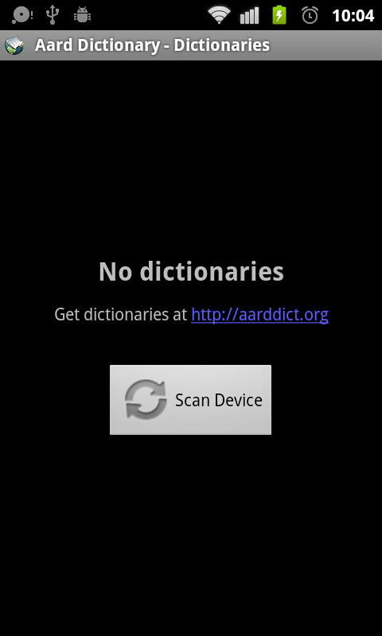
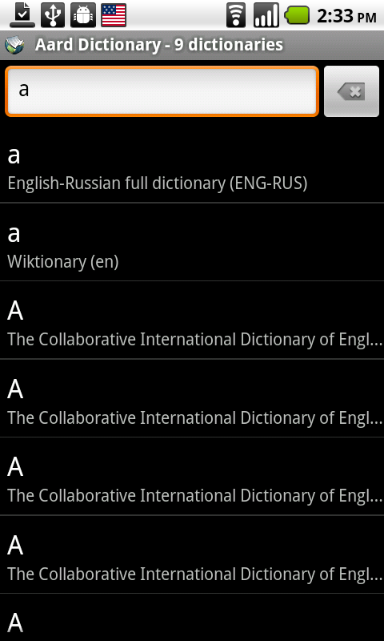
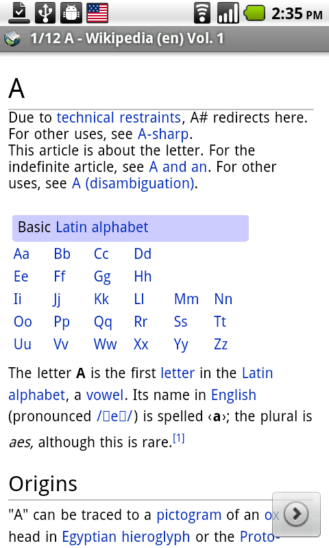
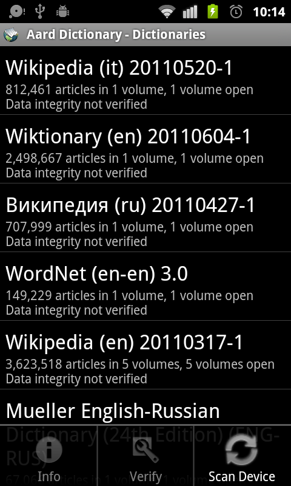

Aard Dictionary for Android¶
Overview¶
Aard Dictionary for Android is a port of Aard Dictionary to Android (duh!). It uses same dictionaries as desktop version.
Aard Dictionary for Android consists of two main activities (Lookup, Article View) and two auxiliary activities (Dictionaries, Dictionary Info).
Application starts with Lookup activity. It goes through the list of previously open dictionaries and loads them again. If no dictionaries are open, user can device scan to find dictionaries.
{kind=link}
Note
Aard Dictionary is looking for files with .aar extension by recursively scanning device’s file system starting from / (excluding some system directories such as /proc or /etc, hidden directories and ignoring symlinks), all dictionaries normally should be discovered by this process. However, dictionaries can also be opened manually from a file manager such as Ghost Commander: navigate to the dictionary file to be opened, tap on it, choose Aard Dictionary to complete the action if prompted.
In Lookup activity simply start typing in the word lookup box. Matching results will appear in the list below it. Scroll down to see more lookup results, if available. Tap on an item in the list to corresponding article.
{kind=link}
If more than one article is available with the same or similar title Next button appears in the bottom right corner on screen touch. Same applies when user follows a link from an article: article from the same dictionary will be loaded (if found), but if more than one is found in all dictionaries user will be able to view them by tapping the Next button.
{kind=link}
Use device’s Back button to go back (to previous article, or, if there is no previous article, to Lookup activity screen). Use device’s Search button to close Article View activity screen and go straight to Lookup Activity. If Article View was launched from another application, closing Article View will return user to that application instead.
Use Zoom In and Zoom Out menu items in Article View activity to adjust article’s text size.
Use device’s volume control buttons to scroll article text and to navigate to next/previous article. Volume down button will navigate to the next article when article is already scrolled to the bottom. Similarly, volume up button will navigate back when at the top.
Use View Online menu item to see online version of current article in the web browser (this only works if dictionary’s metadata includes server URL as is usually the case with Wikipedia, Wiktionary, Wikiquote and such).
View list of currently open dictionaries by opening menu in Lookup activity and tapping Dictionaries.
{kind=link}
Tap on an item (or select Info in the menu) in the dictionary list to see dictionary’s description, license and copyright information (if available). Tap and hold (or select Verify in the menu) to verify dictionary’s data integrity.
Note
Info and Verify menu items work when trackball is used for interaction (they need an item selected in the dictionary list, but selection disappears when touch is used).
{kind=link}
Data integrity verification may take a very long time, especially on large dictionaries and/or slow devices.
Note
If data verification indicates that dictionary files are corrupted it means there were errors while downloading or copying the files to SD card or internal device storage. It may also point to bad hardware, such as defective SD card. You may need to download and/or copy dictionary files again, or replace SD card if defective. Dictionary data can also be verified using desktop version of Aard Dictionary to establish whether the error occurred during download or file transfer.
If more dictionaries were copied to device after Aard Dictionary scanned it, it needs to be re-scanned for Aard Dictionary to pick up new dictionaries. Select Scan Device menu item in Dictionaries to do this. Alternatively, new dictionaries can be opened from a file manager.
Initiating Lookup from Other Applications¶
Many applications implement Share action so that selected text can be sent to other applications. Since version 1.6.4 Aard Dictionary should appear in the list of applications that can receive shared text.
Alternatively, word lookup may be initiated directly in Aard Dictionary with the following:
Intent intent = new Intent();
intent.setClassName("aarddict.android", "Article");
intent.setAction(Intent.ACTION_SEARCH);
intent.putExtra(SearchManager.QUERY, word);
startActivity(intent);
This should take user immediately to the article with best matching title, or to look up screen if nothing found so that user has a chance to modify entry.
Contributors¶
- Iryna Gerasymova (Aard Dictionary logo, testing)
- Igor Tkach (SDict Viewer and Aard Dictionary author)
- Jeff Doozan (EInk display support, fixes)
- Chinese translation by bbs.goapk.com
- French translation by Riad Benchoucha
- German translation by dliw
Reporting Issues¶
Please submit issue reports and enhancement requests to Aard Dictionary for Android issue tracker.